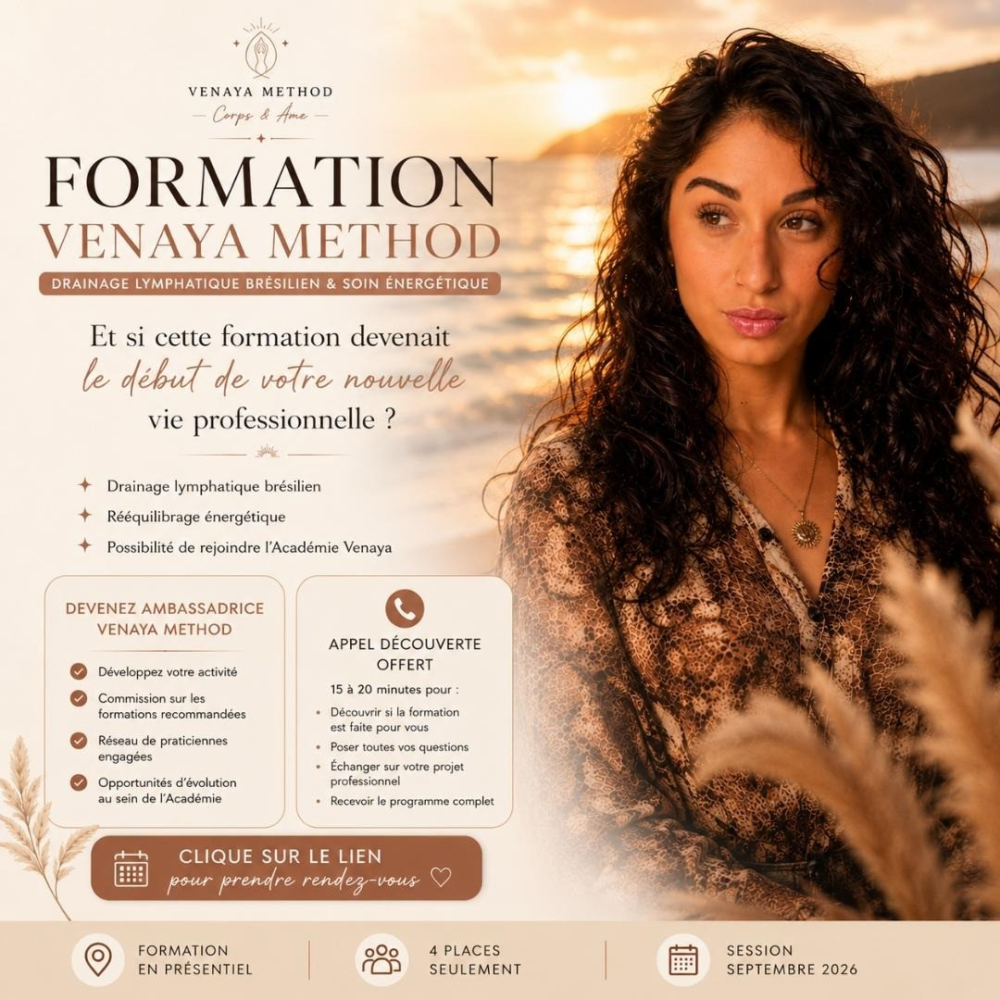

Venaya Academy
Construire un réseau de praticiennes engagées.
L'Académie Venaya est la prochaine étape : former, accompagner et faire grandir des praticiennes qui portent la méthode avec exigence, douceur et professionnalisme.
Praticiennes
Des femmes formées à la méthode et accompagnées dans leur lancement.
Ambassadrices
Des anciennes stagiaires capables de recommander la formation et de développer le réseau.
Formatrices
À terme, des profils sélectionnés pour transmettre la méthode dans d'autres villes.

Vision
Bien plus qu'une formation. Un véritable écosystème.
Venaya Academy doit devenir un système structuré : méthode, standards, accompagnement, réseau, visibilité et opportunités d'évolution.
L'objectif est de créer une communauté de praticiennes engagées, capables de transmettre l'univers Venaya avec professionnalisme, douceur et exigence.